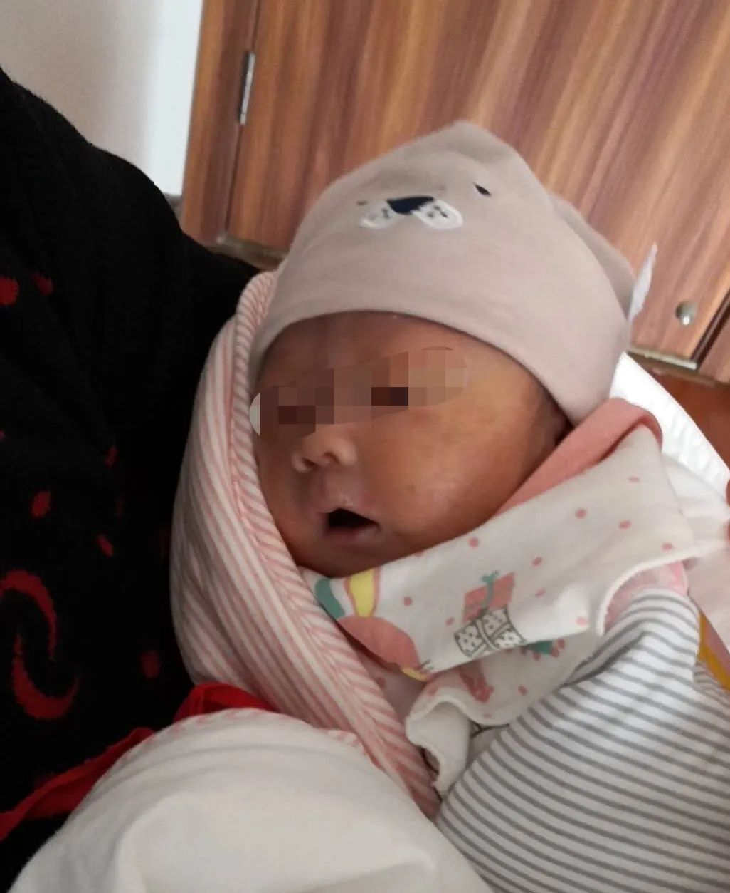
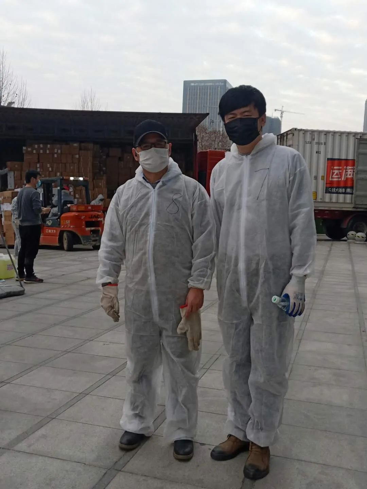
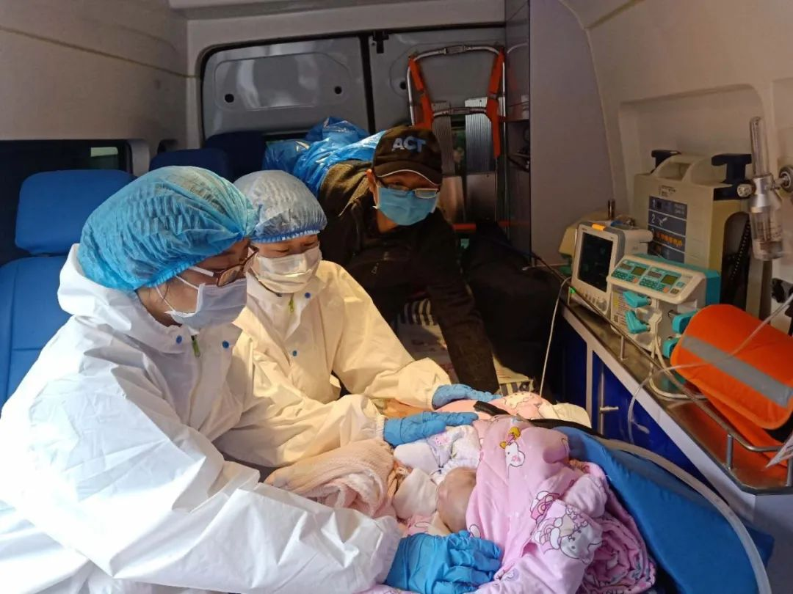

武汉，无法忘却的31天
原文链接 备份链接 2020年2月23日，武汉封城整一个月。以下是武汉在过去一个月中的31个片段，它们来自一线记者的所见、来自市民在社交平台上的记录，它们汇聚在一起，构成了这座城市最难忘的一段记忆。 策划*****｜*********《人 …

摘要：晏辰刚在武汉“封城”的前一天出生，很快被发现患有严重的皮罗综合征，亟需手术治疗。国内能为他做手术的专家远在南京，民间志愿者、两地医院、湖北安徽江苏三省政府部门以及媒体通力合作，将晏辰刚在72小时内从武汉转诊至南京。
文丨高佳实习生赵佳佳
编辑丨林鹏
晏辰刚在武汉“封城”前一天出生，患了罕见的先天性疾病——皮罗综合征。他气管极细，只能借助呼吸机维持生命。在武汉城里，父亲晏义威找不到可以为他做手术的医生。
南京医科大学附属儿童医院的医生沈卫民愿意为他提供治疗，前提是晏义威要想办法把孩子送到南京。2020年的初春，从武汉到南京的1000多里路遥远且壁垒重重。
2月18日，晏义威发布朋友圈求助，志愿者陈星旭2月21日早上开始联系晏义威，接过了这场生死救援的第一棒。到2月24日上午晏辰刚离开武汉，救援时间将近72小时。
志愿者之后，华中科技大学校友会成员，湖北、安徽和江苏的政府部门、媒体也参与进救援中。72小时后，出生一个月的晏辰刚坐上了去往南京的车。
这是武汉“封城”中为数不多成功转诊至省外的非新冠肺炎病人。对志愿者来说，这是一次心理补偿的机会，抚平过去一个月里，他们触碰到的更多无解以及由此积压的情绪。3月4日，南京医科大学附属儿童医院准备为晏辰刚做手术，这位拥有崭新生命的小朋友，现在终于可以攒足力气，面对疾病了。
出生在“封城”前一天
晏辰刚小朋友出生的时候，没出现热闹的景象。原本当他在湖北省中医院的病房里睁开眼睛时，出现好几张对他微笑的脸，他的爸爸晏义威37岁迎来第一个孩子，奶奶、外婆和姑姑，还有其他的亲戚们早都准备好要来看他。
1月22日，国家卫健委公布数据，新冠肺炎病例在湖北省确诊444例。那天早晨，省中医院的发热门诊有近10个患者等候就诊，医生们换上了防护装备，面罩上结着细水珠。晏辰刚的妈妈下午住进医院，爸爸花120元买到4只N90口罩，只跟外婆两人守在产房外。
晚上9点40分，哭声传来，医院里的喧嚣和紧张比平常更多，但晏义威心里还是欢喜，看着儿子睁开眼睛四处张望。哭声之后过了12个小时，武汉迎来了“封城”的消息。
对世上一切感到陌生的晏辰刚小朋友，大概感受不到在城市里肆虐的病毒的可怕。如果能健康出院，他会像很多在疫情期间出生的孩子一样，几乎不受影响地，度过生命中最早期无忧虑的时光。往后，他会从大人口中对自己的生辰、本世纪20年代的开端有模糊的了解，也或许会明白人们为什么把他在的城市叫做英雄城市。这按说会发生在很久之后，不过现在，命运好像急迫地想让他提前获知这一点。
在他出生的那晚，晏义威发觉，“他呼吸的时候，是从口里吐气出来。”第二天早上又看到，“他脸色苍白，嘴唇发紫。”
晏辰刚得了一种罕见的先天性疾病，武汉“封城”的第一天，他被转院到湖北省妇幼保健院，医生确诊他是腭裂患儿（注：腭裂是先天性疾病皮罗综合征的常见症状），但医院没有相关专家，无法进行手术，他只能一直在新生儿科ICU接受观察。
晏义威就跑去路对面的武汉大学口腔医院，在那里求了值班的护士给找医生看看，可他们也无能为力，这个病特殊，“懂的人太少。”
他觉得无力，“我想为他（孩子）做点什么，但好像就只能听天由命。”

出生还未满月的晏辰刚小朋友。受访者供图
更糟糕的是，1月30日，医院打来电话，“疫情期间，为了安全，同时那边病床也很紧张，就让把孩子接回来。”孩子抱回来那天，晏义威彻底懵了——出生刚满一周的儿子滴管喂养只能喂5毫升左右，呛奶也厉害，直接从鼻子和口里哗啦啦地流出来。他只能张着嘴巴呼吸，喉咙里一直有沙哑的声音，整个人没有一点点精神。
由于医疗资源紧张等原因，在疫情期间患上非肺炎疾病，无论疾病大小，危险程度都比往常更加一层。
此前，民间组织“520志愿者团队”发起人陈星旭一直在帮新冠肺炎患者找床位，前期每天在微博肺炎患者求助超话（以下简称“微博超话”）里收集近200条信息。2月9日后，武汉开始落实新冠肺炎“四类人员”分类集中管理措施，到了2月14日，肺炎患者求助数量降至30条。
更多非肺炎患者的求助占满了超话。“其实这类患者一直在求救，只是之前被肺炎患者的求助淹没了。” 吕清和朋友在2月11日发起了“不要红包志愿小组”，专门针对非肺炎患者进行救助，“他们当中的很多人也在安慰自己，觉得可以再缓一缓，但到了现在，一些危重症的患者等不起了。”
2月18日，晏义威发了朋友圈求助：“患儿仅出生20多天，根据医生的初步诊断为皮罗综合征，目前患儿由于呼吸困难+喂养困难，已上无创呼吸机……有生命危险，急需立即做手术。”
有个朋友把消息发布在微博超话里。
这条微博被转发1000多次，“不要红包志愿小组”的成员宇航在他的微博首页看到朋友都在转，在求助的最后，晏辰刚的爸爸写道：“救救我家小宝宝吧，叩谢！再叩谢！三叩谢！”
他马上打电话过去，“孩子爸爸有点哽咽，他的孩子需要转到南京医科大学附属儿童医院做手术，但儿童医院需要他出示核酸检测结果，可孩子和他都没有发烧的症状，不能获得核酸检测的名额，即便获得了名额，等待结果的时间一般会超过24小时，他担心孩子已经不能再继续等了。”
宇航平常会在微博里搜集求助信息，每天对接四至五名患者，问清他们的病情和需要得到的帮助，告诉他们官方已发布的收治非肺炎患者的医院信息，解答转诊需要办理的手续，再把患者信息收录进表格里，持续跟进。目前“不要红包志愿小组”收录了110多位非肺炎患者，经过核实的危重症患者会被统一上报给央视新闻记者，央视新闻在2月15日公布了危重疾病患者可填写的求助信息平台。
“低龄的孩子，或独居的老人，情况紧急的会优先考虑按危重症处理。”宇航听完晏辰刚的情况，让晏义威提供社区电话和孩子的身份证号，想把他归为危重症进行上报。但晏义威告诉宇航：“孩子没有身份证。”
和晏义威的通话时间只有3分钟，但宇航清楚记得他。“因为疫情，宝宝连获得一个合法的身份都有困难。”最后上报的时候，晏辰刚的身份证一栏是空白的，在备注里，宇航写道：这是刚刚出生的婴儿。
异地转诊难题
孩子出生前，晏义威的妻子每个月定期去做检查，染色体、NT、大小排畸、封闭抗体都做过，孩子出生后，医生告诉晏义威：“孩子得的是皮罗综合征，是染色体问题，即使在美国，也要经验很丰富的医生，才有50%的概率能查出来。”
皮罗综合征的特征是小颌畸形、舌后坠、腭裂及吸气性呼吸道阻塞。“医生说孩子气管特别窄，只有2.5毫米，正常的宝宝是3.5到4毫米。”晏义威在论坛发帖求助，网友建议他咨询该领域的权威专家——南京医科大学附属儿童医院的沈卫民医生，网上问诊之后，2月1日，沈卫民回复：“是小下颌（即皮罗综合征），血氧饱和度降到70%，肯定要做手术。”
沈卫民告诉《极昼》：“孩子病情复杂，手术风险大，预后也未知”，因此他要先挺过这台手术，改善呼吸，之后或许还要应对各种伴发病。
可疫情严重，事情变得更麻烦。按武汉市疫情期间异地转诊的流程，患者和陪同人员需要做核酸检测，开具《非肺炎健康证明》，所用离汉车辆需要办理通行证，接收医院需向当地防疫指挥部备案。
2月20日晚上，“520志愿者团队”的发起人陈星旭也看到了晏义威的求助，他跟进过一位成功转诊去北京的患者，熟悉异地转诊需要办理的手续。
第二天一早，陈星旭打通电话，电话那头的晏义威几近崩溃，“我问他一个事，他嘴里头不断地絮絮叨叨，回答的都是一些跟这事没关系的。”陈星旭说。

志愿者陈星旭（右）搬运物资送往医院。受访者供图
陈星旭之前为肺炎患者找床位时，在网上到处搜罗相关的政府工作人员电话，也搜集到一些“有用”的联系方式。了解到目前孩子身体脆弱，要用呼吸机，需要救护车资源，陈星旭打电话给一位相关部门负责人，“当时他在开车，电话中断了四五次，断断续续地说完，他当场拍板说，他会跟进一下。”
中午之前，晏义威接到了街道办，江夏区和武汉市公安局的电话，他们跟陈星旭转达：“可以离开武汉了！省妇幼答应派救护车，但不能出湖北，只能送到安徽和湖北的交界处，黄梅县。”
下午3点多钟，宇航接到了晏义威的电话，“他好像比之前更着急了，语速也快，我一开始都听不清他说什么，后来了解他是不知道安徽这段路要怎么走。”宇航没有对接过车队，猜想晏义威当时是“病急乱投医”，他的号码归属地是安徽，晏义威可能注意到这一点，所以来询问能不能提供安徽的资源。
晏辰刚的妈妈刚坐完月子，志愿者的电话也打到她手机上，按他们的提示，她第一次出了门，做了核酸检测，回到家消完毒，紧接着就给安徽省相关部门打电话，“最后打到急救中心，急救中心说，因为疫情原因，救护车都被征用了，目前没有可调度的车。”
除了车辆接洽之外，医院接收也是个难题。南京医科大学附属儿童医院院办工作人员于露露告诉《极昼》，“医院本质是救命治人，只要孩子能通过正常的渠道到我们医院来，我们做好了为他手术的准备。但是疫情下，他要怎么过来，防控措施怎么做，就要由上面行政部门来去协调和沟通了。”
吕清一直在关注这场救助的进展，她觉得，好像和她之前跟进过的异地转诊失败案例一样，这个案例也正在走进死胡同。
“首先出湖北之后的路段不知道要怎么走，走的时候会不会被卡；南京的医院和当地防疫指挥部沟通的情况未知，不知道是不是确实能够收治病人；2月21日，孩子的父母才去做第一次核酸检测，一般24小时后出结果，按正常流程，两次核酸检测结果都呈阴性，才能找社区办理《非肺炎健康证明》；另外仍然没确定的是，从武汉出来的人，到了南京，是否需要隔离14天。”吕清说：“这些未定的沟通和等待的时间，孩子等得起吗？”
那时的陈星旭跟她一样绝望，到处求人，“我知道朋友圈有搞企业的，有搞媒体的，可能有能力、有发声权的，我都去求了个遍。”
天黑之前，事情终于有了进展。
幸运和常态
和陈星旭同在华中科技大学校友会群里的何春晖回了他的消息，“这个事我给你想想办法”，她说。
“实际上，我跟春晖师姐素昧平生，平常我们也就在群里聊两句，没什么特别的关系。”陈星旭看到她的回复，觉得踏实了些，以前群里求助，提供政府部门联系方式的多是她，他猜测她“有比较高的职位”，只是具体在哪个单位、做什么工作，一概不知。
半小时后，何春晖打电话过来，“她说已经对接了相关事项，答应全程跟踪路上的事。”
当时还有位《扬子晚报》的记者找到陈星旭，要了解这次救助的具体情况，陈星旭拜托他去问南京医科大学附属儿童医院的态度，“春晖学姐的电话挂掉后，南京那边紧接着就传来好消息，说医院同意接收这孩子。”
何春晖是60后，上世纪90年代到了北京，在国务院部委工作了20多年，后来下了海，是校友群里的前辈，她又联系了华中科技大学南京校友会的两个同学，“一位是南京当地的企业家，一位是央级媒体的工作人员，他们也去联系了南京卫健委和儿童医院。”何春晖说：“从他们那儿再次得到确认，医院接收是完全没问题的，只要湖北的医院开一个（转院证明），南京的医院就开转入证明，只要孩子两次核酸结果是阴性，直接送进医院。”
陈星旭甚至还找到了另一个替代方案。“《湖北日报》的记者推给我一个直升机公司的联系方式，他们有医疗直升机，高氧环境，带隔离舱和呼吸机，非常罕见，也适合这孩子，只是价格贵，一趟要30万。”
他把这事告诉了何春晖，那时他们还在担心路上可能被卡的问题，她说：“我们群里刚捐了一部分钱，不管多少钱，我们都把它租下来。”
到了21日晚上，晏义威已经不再需要担心车辆途中被卡和医院无法收治的问题了。

救护车载着晏辰刚离开武汉。受访者供图
在过去的这一个月中，他每天只睡三、四个小时，吃过早饭去医院，晚上8点过后回到家再吃第二顿。他老家在孝感，在武汉做程序员，房子买在江夏区，离省妇幼保健院20公里远，他没有车，每天骑电动车过去。电动车的电不够用，就骑到省中医院门口，再换一辆共享单车。这一路要花两个小时。
3天前发朋友圈时，他做好了最坏的心理打算，“从13号到18号，一周的时间，我每天都在求人，一辈子也没求过那么多人，最后我已经觉得自己彻底没戏了，找不到办法的感觉太难了。”
但自从陈星旭打来电话，困难接连着被解决。隔了一天，志愿者又帮忙找到了救护车，医疗救援公司武汉安达讯医疗救护站可租赁的救护车上配备着呼吸机，武汉至南京要价18000元。作为陪同家属的晏义威需要做的，只剩等待晏辰刚的第二次核酸检测结果，和准备好到南京后直接接受14天隔离。
现在难题消解，从武汉到南京，当时看来无法跨越的1000多里路，就这样被打通了。他到底也不知道是谁帮了忙，“只知道有很多热心的志愿者。”
在陈星旭和吕清的经验中，展现出像这样强有效的救助不多见。只不过这次，有一只“无形的手”加入，它背后有强有力的社会资源，在碰到它时，志愿者们火苗一样的热心燃烧起来，才得以温暖起那些苦难。
“这个宝宝真的无敌幸运。”吕清说。她同时跟进的一位疑似白血病患者涂春萍，就在2月22日，被湖南的一家医院拒绝收治。
26岁的涂春萍十多天前在孝感市中心医院查出疑似急性白血病，他的白细胞只有正常人的三分之一。“他需要到武汉市同济医院、协和医院、中南医院这样的大医院拿穿刺检测结果，然后确诊，得到治疗方案。”涂春萍的姐姐告诉吕清：“现在打电话去问，医院的实验室没开，检测做不了，武汉市其他收治非新冠肺炎病人的医院也挨个问过去，都说做不了。”
2月16日，她打算带着弟弟去省外就诊，因为受不了远路颠簸，所以考虑去湖南的一家医院。涂春萍已经拿到了《非肺炎患者健康证明》，做好了过去隔离14天的准备，也在联系找当地的防疫指挥部开具车辆通行证。行前准备妥当，终于等来了医院的确切回复：“血液科没有多余床位。”
“涂春萍求助有快10天了，能想的办法，能使的方式，都试过了。”吕清说，“一开始他们是找了亲戚去打听医院的情况，医院说可以接受，但现在（医院）可能还是不想要湖北的病人过去，一旦出去的任何一个人成为了传染源，那就有人要担责，谁敢担责？”
拯救宝宝和拯救武汉
陈星旭觉得晏辰刚小朋友就像电影中的主角，他们是帮他“通关”的助手。
在把他送上救护车之前，志愿者们没敢泄劲，还在忙着确认路上可能遇到的障碍。2月23日，安徽交通广播的记者答应陈星旭，“只要进了安徽境内，一旦出问题马上负责协调。”湖北省相关部门也给他发来消息，“让把具体走哪一条路线编辑成信息发过去，他们派专人跟进。”
路途中的不确定因素几乎消失，2月24日上路之前，只剩一项任务：拿到晏辰刚的第二次核酸检测报告。实在等不及，傍晚近7点钟，陈星旭又去请求洪山区卫健委一名工作人员的帮忙，7点13分得到检测结果，“阴性，可以出发了。”
他一整天都在发信息，打电话，手机充了五次电，“有些人都躲着我了，嫌我烦吧？”他发来“捂脸”的表情。从接到求助信息到这会儿，过了将近72个小时，过程中他怕自己赶不上时间，怕孩子没办法熬过漫长的等待，现在心理终于安稳一些。他记着晏义威给他发来的孩子照片，小小的人被包在被子里，半张着嘴巴呼吸，“他太小了，一定要把他救下来。”
这样的心情对陈星旭来说，在做志愿者的日子里再熟悉不过了。
帮肺炎患者找床位的那段时间，他接触了很多无助的人和消息，把他压得几乎喘不过气。有段时间，陈星旭也发烧了，“干咳，咳得心肝肺疼，有唾液状的痰，症状很像肺炎患者。”但症状消失得也快，他后来想想，可能叫心理代入。
和他一样，吕清的心里也积压了层层无力感。“一天晚上，我跟一个老人通电话，他老伴因为肺炎去世了，女儿重症去了医院，他自己一个人进了隔离点，电话里他哭了，我当时虽然还能保持正常跟他问话，但我知道那次对我来说是有阴影的，我很晚才睡，一躺下来，眼泪就流出来了。”
对晏辰刚的救助有了眉目之后，吕清决定之后不再跟进新的患者案例，过去近一个月里，她把所有的精力都放在志愿活动上，现在，她准备回归正常生活，接下来计划申请读博，“最后，只希望听到小朋友顺利到南京的消息。”

晏辰刚身边有湖北省妇幼保健院医护人员随行，挺过了1000里长路。受访者供图
2月23日晚9点，一切就绪，陈星旭已经在向各个参与接力救援的志愿者群里发布准备启程的消息，没想到“通关”路上仍有关卡。
晚上11点，湖北省妇幼保健院的医生给晏辰刚做身体评估，“路太远，孩子太虚弱，路上一旦出状况，没法处理，孩子夭折的风险有60%。”
陈星旭感觉他的心像被人揪着。如果省妇幼保健院允许晏辰刚的主治医生和护士一起陪同，能大大提高他的生存几率，陈星旭又去征求医院领导的同意，零点之后，他发来哭泣的表情，“同意了，（医院）支援儿科医生和护士。”
“我的心脏都要爆炸了。”他说。
现在，晏辰刚小朋友终于可以离开武汉，到南京做手术了。
一场成功的转诊，也帮陈星旭完成了一次心理补偿，抚平过去一个月里，他触碰到的更多无解以及由此积压的情绪。
他有很多联想。“这孩子来到世界上29天，29天的生命中，他所受到的磨难跟武汉一模一样。他得的病叫皮罗综合症，是一种跟呼吸有关的疾病，他气管非常纤细，呼吸困难，实际上，武汉好像得的也是这样的病。”他告诉晏义威：“你不要谢我，我们拯救的不仅仅是你的孩子，我们拯救的是武汉。”
2月24日，中午1点钟，晏辰刚小朋友坐上了去往南京的救护车，他被包裹在粉红色的被褥里，扎紧了安全带，救护车开到150码，路上颠簸，他的鼻饲管断了一根，幸好有医生帮忙更换，晏义威站起来，远远地望着他。晚上7点多钟，小朋友挺过了长路，到达南京医科大学附属儿童医院。
从那时开始，这位小朋友便只需要努力同疾病抗争了。
（应采访对象要求，文中吕清为化名）
后台回复”读者群”, 加入更多讨论

小昼
长按二维码向我转账
受苹果公司新规定影响，微信 iOS 版的赞赏功能被关闭，可通过二维码转账支持公众号。
原文链接 备份链接 2020年2月23日，武汉封城整一个月。以下是武汉在过去一个月中的31个片段，它们来自一线记者的所见、来自市民在社交平台上的记录，它们汇聚在一起，构成了这座城市最难忘的一段记忆。 策划*****｜*********《人 …
原文链接 备份链接 武汉新冠肺炎疫情肆虐，每一个家庭都在举全家之力，从防疫生死线上拽住家人。患者、家庭、医院……求医与救治环环相扣。有的人最终去世，更多的人在治愈出院，在历经煎熬、等待、悲痛、喜悦之后，用人心和勇气筑起的这道防疫线，正在变 …
原文链接 备份链接 疫情严峻，武汉仍在不断征集新冠肺炎床位。重压之下，各家医院肿瘤科「只出难进」，有患者被迫出院，通过网络发帖求助；也有患者试图寻求省外求医路，却被两边「入院接收单」与「通行证」夹在中间，难寻答案。 —— 同一个家庭里的新 …
原文链接 备份链接 文/六筒 李岩半年前刚去过武汉，和家人去旅游，主要想看看黄鹤楼。那还是夏天，热气蒸得人头上冒烟。高温挡不住蜂拥的游客，摩肩接踵，拥塞的车辆在大道上艰难挪动。“真是个大都市”，她想。 李岩是河北医科大学第二医院呼吸与危重 …
原文链接 备份链接 你印象中的武汉是什么样的？ 这座位于华中地区的省会城市充满着生命力，夏天够热，热干面是他们最常见的美食，闲下来的老人们会聚在街头巷尾打牌，春节是他们最热闹的节日，有归乡的年轻人，有早早就置办年货的老人，有火红的对联和热 …